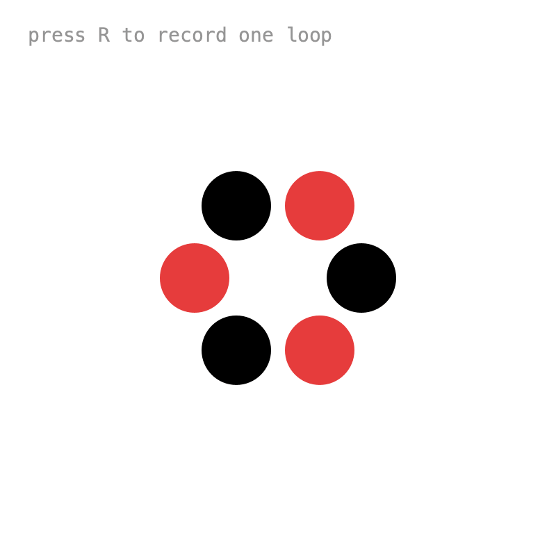

10. Export¶
To turn a sketch into a video, you save every frame with saveFrame(). But saving is slow, and a timeline that follows the real clock skips ahead to stay on time. The frames end up unevenly timed, and the video plays at the wrong speed.
Save frames¶

setFixedStep() makes every draw() advance the timeline by exactly the same amount, however long it takes:
int fps = 30;
void setup() {
frameRate(fps);
tm = Keyed.init(this).setDuration(3);
tm.setFixedStep(1f / fps);
}
To do the same for all timelines, set it globally before creating them:
To record exactly one loop, start and stop recording in onLoop():
tm.onLoop(t -> {
if (recording) {
recording = false;
}
if (requested) {
requested = false;
recording = true;
frame = 0;
}
});
and save in draw():
Anything drawn after saveFrame() doesn't end up in the frames, which is handy for status text. Turn the frames into a video with Tools > Movie Maker.
Info
The GIFs on this site were made this way: every example ran with Keyed.sync(false), saving one frame per draw().
Full sketch: SaveFrames
import ch.domizai.keyed.*;
int fps = 30;
float duration = 3;
Timeline tm;
Keyed<Float> angle, spread;
boolean requested = false;
boolean recording = false;
int frame = 0;
void settings() {
size(400, 400);
}
void setup() {
frameRate(fps);
textFont(createFont("Courier", 14));
tm = Keyed.init(this).setDuration(duration);
// Every draw() advances exactly 1/30 second, however long it takes,
// e.g. while saving frames. The frames are then evenly timed
// and the exported video plays at the right speed.
// Keyed.sync(false) with Keyed.setFrameRate(fps) does the same
// for all timelines.
tm.setFixedStep(1f / fps);
// Records exactly one loop: starts when the loop begins, stops when it wraps again.
tm.onLoop(t -> {
if (recording) {
recording = false;
println("saved " + frame + " frames");
}
if (requested) {
requested = false;
recording = true;
frame = 0;
}
});
angle = Keyed.of(0f)
.key(Key.at(0).setEasing(Easing.CUBIC_IN_OUT), 0f)
.key(duration, TWO_PI / 3);
spread = Keyed.of(0f)
.key(Key.at(0).setEasing(1 / 3f), 60f)
.key(Key.at(duration / 2).setEasing(1 / 3f), 130f)
.key(Key.at(duration).setEasing(1 / 3f), 60f);
}
void draw() {
background(255);
pushMatrix();
translate(width / 2, height / 2);
rotate(angle.value());
noStroke();
for (int i = 0; i < 6; i++) {
float a = i * TWO_PI / 6;
fill(i % 2 == 0 ? color(0) : color(230, 60, 60));
circle(cos(a) * spread.value(), sin(a) * spread.value(), 50);
}
popMatrix();
if (recording) {
// Saves next to the sketch, as frames/0000.png, frames/0001.png, ...
// Turn them into a video with Tools > Movie Maker.
saveFrame("frames/" + nf(frame, 4) + ".png");
frame++;
}
// Drawn after saveFrame(), so it doesn't end up in the frames.
fill(150);
if (recording) {
fill(230, 60, 60);
text("REC frame " + frame, 20, 30);
} else if (requested) {
text("recording starts with the next loop", 20, 30);
} else {
text("press R to record one loop", 20, 30);
}
}
void keyPressed() {
if ((key == 'r' || key == 'R') && !recording) {
requested = true;
}
}
That's the end of the tutorial. For a compact summary of everything, see the API Overview.